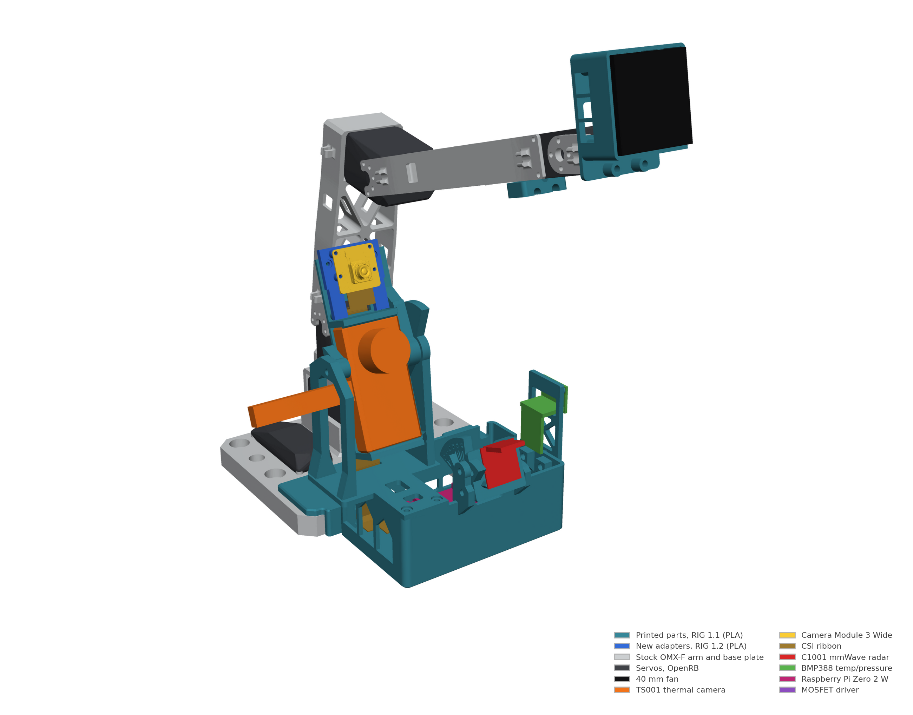

CMU 17-720 · Fall 2026 · Team project in progress
Wearable-free cooling robot
Use external sensors to estimate thermal comfort and aim a fan at a seated person, then measure the response.
My role Built the sensing and control software, integrated the devices, calibrated the camera-to-arm geometry, and ran initial pilot measurements. The course project is collaborative with Zimeng; mechanical integration and study work continue.

Integrated hardware
A Raspberry Pi Zero 2 W connects the wide-angle camera, millimeter-wave radar, ambient temperature/pressure sensor, and fan switch. A thermal camera and robot arm connect to the Mac.
The live software combines the sensor streams, estimates the face position, and points the fan using camera-to-arm calibration. The rig was brought up on November 2, and a participant confirmed that the aimed airflow reached them.
Pilot measurements
The software records a participant's own comfort label alongside sensor summaries and timed fan-off / fan-on / fan-off intervals. Early recordings exposed thermal-stream startup behavior, sensor drift, changes in head pose, and an arm-control fault.
In one seated control run, median face temperature fell about 0.26 °C between the selected fan-off and fan-on windows and did not recover in the following interval. That single run cannot separate airflow, drift, movement, and physiology, or establish a cooling benefit.
The sensing question is still open: which measurements track a person's reported thermal comfort, and how much does controlled camera positioning improve those measurements?
What remains to establish
More labeled sessions, appropriate rest and activity controls, stable sensor alignment, and a test protocol that can separate the intervention from natural temperature drift. Hardware bring-up and an aiming demonstration are complete; a validated comfort model and user study are still in progress.
Methods: thermal imaging, radar, camera/arm calibration, multimodal logging, intervention design.